Följande är en tabell över de hovslagare/hofsmeder, sergeanter och fanjunkare som tjänstgjorde mellan år 1682 och 14 Mars år 1897 vid Roslags kompani, Livregementet till häst och som under sin tjänstetid har bott i Aspund på hovslagarbostället.
| Tjänsteår | Titel | Namn | Information | Övrigt |
|---|---|---|---|---|
| ca 1686 - 1703 (död) | Hofsmeden Mäster | Petter Fors |
Petter nämns i den tidigaste Generalmösterrullan från år 1684 och även 1686. Kan ej tyda Aspsund men däremot Lyhundra härad. Kompaniet går då under namnet Ryttmästare Bredtholdtz.
I Generalmösterrullan för år 1692, Livregementet till häst, Roslags kompani finns nedtecknad att hofsmeden vid kompaniet var Petter Fors, boende i Lyhundra härad, Söderby socken, Aspasund. Enligt generalmösterrullan för år 1704 så dog Petter den 13/4 1703. Exakt en vecka senare deltog regementet vid slaget om Pultusk. Kanske dog Petter i samband med detta eller av sjukdom/skada innan.
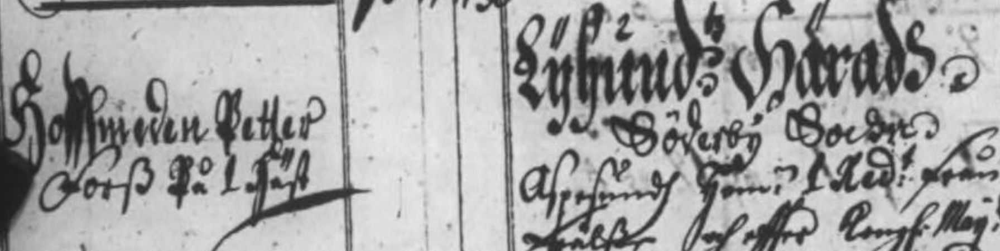 Bild till höger: Livregementets (till häst) uniform 1680. Källor: Generalmönsterrullor Livregementet till häst, Roslags kompani 1684, 1686, 1692, 1704 |
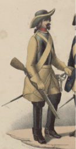 |
| 1703 - 1704 (död) | Hofsmeden | Mårten Ström |
I Generalmösterrullan för år 1704 finns sedan angivet att Mårten Ström blev "hittransporterad" från Fellingsbro Compagnie, 4 maj 1704. Fellingsbro kompani tillhörde samma regemente som Roslags.
I Generalmösterrullan från 1705 står det "död 29 sep 1704" vilket sammanfaller med belägringen av Thorn Både Fors och Ström avlider (okänd dödsorsak) inom något år under nordiska kriget (som pågick i bl.a Polen, Sachen, Ryssland och till slut Poltava) där livregementet till häst deltog. Källor: Generalmönsterrullor Livregementet till häst, Roslags kompani 1704 och 1705 |
|
| Ca 1712 - 1746 eller längre. Död 1761. | Hofsmeden | Fredrick Jordan |
Regementshovslagaren Fredrick Jordan ses första gången i Generalmösterrullan för år 1712. Det är första mönstringen jag hittat efter Poltava. Livregementets 12 skvadroner, inklusive Roslags skvadron var uppställda på högra flygel inför det ödesdigra slaget 1709. Har inte hittat uppgifter om sårade/tillfångatagna/döda hos livregementet men troligen var regementet upplöst efter slaget.
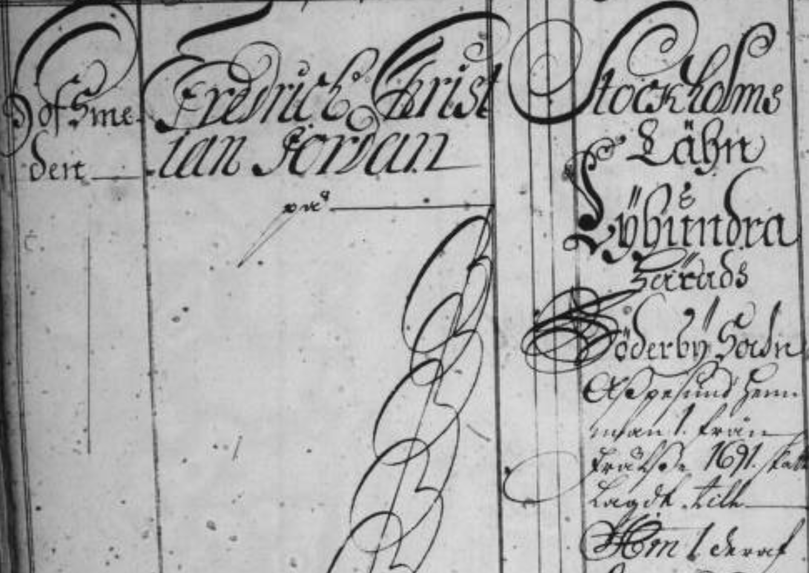 Det finns uppgifter om att Olof Skragge (Lagerborg) från Brölunda är ny Ryttmästare för Roslags kompani. Lagerborg som var sårad, hemskickad och därmed hade undsluppit Poltava fick i uppgift att återupprätta kompaniet. Fredrick Jordan omnämns också i söderby husförhör volym 1 och 2 vid årtal som 1720 o 1746 samt i Generalmönsterrullor fram till 1746. Även hittat i annan text att han skänkt och troligen som smed tillverkat takflöjlar till Estuna kyrka 1727 och bidragit till ny klocka i söderby ka. Vid sommarteater på Eriks kulle 1943 uppfördes "SOCKENSTÅMMA MED SÖDERBY DEN 15 APRIL 1744", baserat på protokollet från denna stämma. Mäster Jordan var en av karaktärerna i spelet som fick i uppdrag att göra en ny (spar)bössa. Källor: Söderby k:a husförhör volym 1 och 2 1720 och 1747 Generalmönsterrullor Livregementet till häst, Roslags kompani från år 1712 till 1746 Protokoll sockenstämma Söderby k:a 15 APRIL 1744 |
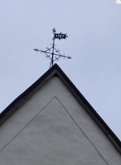 |
| Ca 1764 - 1781 (död) | Hofsmeden | Gottfrid Giljam |
i Generalmösterrullan för år 1764 nämns att Gottfrid Giljam som Hofsmed. Hans föregångare F. Jordan död 1761. Gottfrid som är vallonättling föddes 1730 vid Skebo bruk o dog 1781 i Aspsund (källa googlad släktforskning). Änkan Greta o barn bor kvar i huset åtminstone 1787 till 1793. Källa Söderby kyrkoarkiv A1:3.
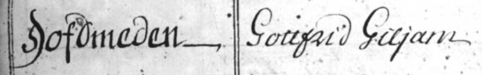 Källor: Söderby kyrkoarkiv A1:3 Generalmönsterrullor Livregementet till häst, Roslags kompani från år 1764 |
|
| 1783 - 1804 (död) | Hofsmed (veterinär) | Eric Sahlström |
Byns kanske mest utbildade hofslagare och veterinär var Eric Sahlström född 1753 inflyttad från Upsala 1783. Återfinns i Generalmösterrullan för år 1785. Där det står att Giljam avled år 1781 och ersätts av Sahldström samma år. Ses även i Husförhör från år 1787 till 1799. Hans fru "Madam" Anna dör 1795 och en av två döttrar dör 1 år gammal 1794.
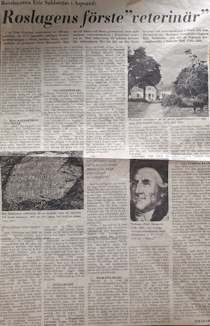 Norrtelje Tidning publicerade 8 april 1975 en artikel om Roslagens förste "veterinär", Hovslagaren Eric Sahlström i Aspsund.Eric vad född 1753 I Norrby socken, Sala. I slutet av 1770-talet var Eric hovslagargesäll i Uppsala och fick snart anställning som extra hovslagare vid livregementet till häst. I juli 1780 skickas han till Skara för att undervisas av professor Peter Hernquist i de teoretiska och praktiska delarna av veterinärvetenskapen. Veterinärinrättningen i Skara bildades 1775, den första i Sverige. Veterinärmedicinsk utbildning var förstås mycket värdefull för den som skulle ansvara för de dyrbara hästarna vid kavalleriets elitförband. Vid examen från veterinärskolan den 6/12 1782 står det i Götheborgs allehanda att “han håller sig på sin lön vid Livregementet och är snäll (skicklig) wid utöfningen av sitt hantverk, Eric tycks ha varit en duktig och eftertraktad veterinär som under ledig tid reste runt i Upplands säterier mm för att undersöka och bota hästar och boskap. Sahlström är även ihågkommen i byn för den skogsvret han odlade upp strax öster om Galltorp och samtidigt på en berghäll intill ristade in “1789 UPTOGS DENA ÅKER AF OLÄNDLIG MARK FRIHETSÅR IFRÅN 1795 TJKS 1836 E. SALSTRÖM” 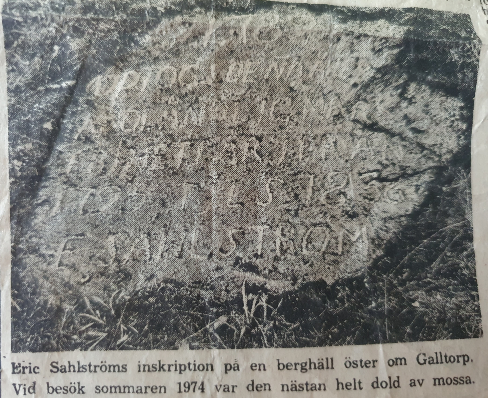 Notering: Livregementet till häst omorganiserades 1791 och uppdelades i livregementsbrigadens kyrassiärkår (huvudstadsnära kompanier som Roslags), lätta dragonkår och lätta infanteribataljon. Källor: Artikel i Norrtelje Tidning 8 april 1975. Söderby kyrkoarkiv A1:3 o 4 Generalmönsterrullor Livregementet till häst, Roslags kompani från år 1785 |
|
| 1805 - 1811 (död) | Hofsmed | Anders Millberg |
Regementshovslagare Anders Millberg född 1764, tar över som hovsmed efter Sahlström 1805.
Anders som är inflyttad 1806 ses i husförhör från 1806 till 1811 (se bild 161) samt i Generalmösterrullan för år 1807. Anders har möjligen bott samtidigt som sin efterträdare Dahlström en tid i Aspsund. Dahlströms titel då Smeden. 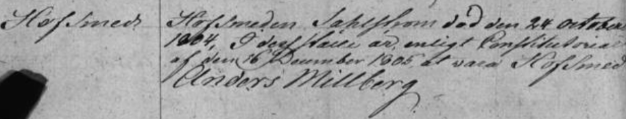 Det var under denna period som återberättad händelse med ryska kosacker och svenska båtsmän/bönder förstärkta med kanon inträffade vid Aspsund. Källor: Söderby kyrkoarkiv A1:5 Livregementsbrigadens kyrassiärer, Roslags kompani Generalmönsterrullor 1807 |
|
| 1811(?) - 1826 | Hofsmed | Hans Dahlström |
Hofslagaren Hans Dahlström föddes i Skåne 1777 återfinns i Generalmösterrullan för år 1814 men går ej att se när han tillträdde.
Kommenderad till Tyskland 1813 enligt husförhörsprotokoll och återkom. 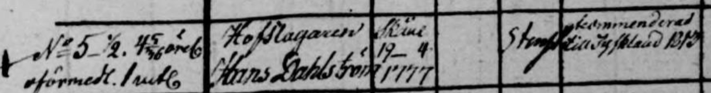 Napoleonkriget pågick och just detta år skeppade Sverige trupper till norra Tyskland. Karl Johan Bernadotte (blivande regent) ledde norra armen mot Napoleons arme. Det var flera mycket blodiga slag under 1813 där Sverige till slut stod på vinnarsidan och fick överta Norge från Danmark vid fredsförhandlingarna. Hans Dahlström kom hem med livet i behåll och bodde kvar i Aspsund fram till 1826. 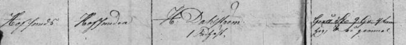 Källor: Husförhör 1808 till 1812 och 1822 till 1826 (familjen även något år före o efter) Hustru o 6 barn nämns liksom 2 drängar. Källa husförhör 1A |
|
| 1827 - 1841 (död) | Hofsmed | Carl Pet. Friberg |
Hofsmeden Carl Pet. Friberg född I Skåne 1804. Inflyttad till Aspsund 1827. Återfinns i Generalmösterrullan för år 1831 och senare.
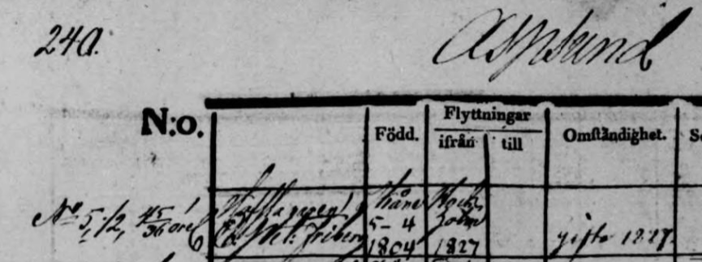 Hofsl Carl Pet. Friberg född Skåne 1804. Inflyttad till Aspsund 1827. Husförhör finns från 1828 till 1840 för Carl samt för familjen fram till 1846, kanske också 47 till 51. Carls är gift och har tre barn. Sonen död som barn. Finns ej med i 3A. Bror mfl nämns i husförhören så kan hända han hade flera familjemedlemmar med sig. Carl dog år 1841, endast 36år gammal. Tycks som en son och en dotter av Dahlströms (föregående dragon) också bor kvar på gården som barnflicka o tjänstegosse i denna familj. 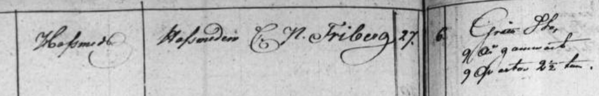 Källor: Söderby-karl kyrkoarkiv Husförhör 1B o 2A, 3A, 4A Livregementets dragoner, Roslags skvadron, Generalmönsterrullor 1831, 1835 och 1838. Vacant vid 1841. |
|
| 1842 - 1845 | Brukaren (arrendator) | Anders Andersson |
Under några år på 1840-talet var positionen som hofsmed vacant enligt Generalmösterrullor från 1841, 1844. Istället arrenderas gården ut.
Änkan Anna Friberg med döttrar bor kvar och Anders Andersson född 1811 arrenderade/brukade gården 1842 till 1845. Familjen Andersson (mina anfäder på farmor Tyra Erikssons sida) flyttade sedan till Galltorp där de arrenderade av Eric Gustav Ericssons under något år innan de flyttade vidare till Södermarjum 1847. Husförhörsprotokoll där Friberg, Andersson och nästa husinnehavare Bergwall syns. Anders son också döpt Anders (min farmor Tyras farfar) bodde därmed som barn några år i Aspsund och blev senare dragon i Södersund, Roslagsbro. Han tog namnet Anders Sundholm (Andersson). Anders Sundholm var då dragon på position no 77 och tillhörde samma kompani “Roslags” som detta boställe tillhörde. Kanske blev han inspirerad som barn? Han tjänade hela 35 år som dragon från 19 års ålder till 54. Även hans son August Sundholm (Tyras far) var dragon under några år. 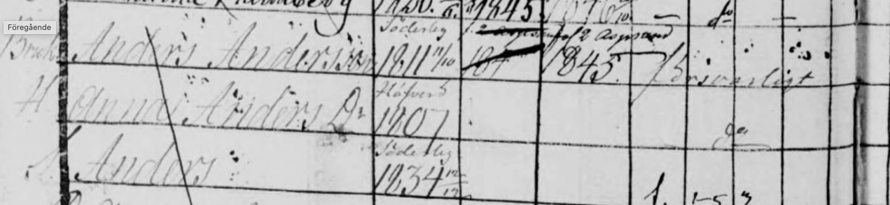 Källor: Livregementets dragoner, Roslags skvadron, Generalmönsterrullor 1841 och 1844 Söderby-karl kyrkoarkiv, Husförhörslängder SE/SSA/1570/A I/4a |
|
| 1846 - 1847 | Arrendator / Bokhållare | Erik Bergwall |
Arrendator Hr. Bokh. Erik Bergwall Född 1795 sthlm. Inflytt 1845 och ut 1847. Är gift med Anna och har 6 barn.
I husförhören ser det ut som 2 små barn dog väldigt tätt år 1846. Där står "ihjelslagenafenhast". Källa husförhör 4A och 5A Källor: Söderby-karl kyrkoarkiv, Husförhörslängder SE/SSA/1570/A I/4a Söderby-karl kyrkoarkiv, Husförhörslängder SE/SSA/1570/A I/5a |
|
| 1846 - 1847 | Sergeanten | Reinhold August Moberg |
Hofslagarpositionen är 1846 ännu vacant och Sergeanten Reinhold August Moberg född 1816 flyttar in.
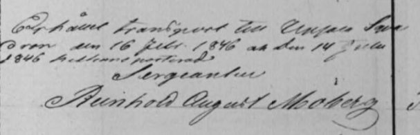 Källor: Livregementets dragoner, Roslags skvadron, Generalmönsterrullor 1847 Söderby-karl kyrkoarkiv, Husförhörslängder SE/SSA/1570/A I/5a |
|
| 1847 - 1866 | Sergeanten | Conrad Zetterman |
Sergeanten (vid kongl liv reg. dragon corps) herr Conrad Zetterman född 1813 i Thorsvi "god christendom" enligt husförhöret. Med Conrad bor hans fru Carolina och en dotter i Aspsund. Inflyttade 1847 och flyttade vidare till Malsta 1866.
"Lägg in Text om Carolina i husförhöret som jag inte kan tyda"
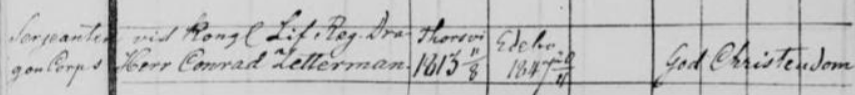 Källor: Livregementets dragoner, Roslags skvadron, Generalmönsterrullor 1850 Söderby-karl kyrkoarkiv, Husförhörslängder SE/SSA/1570/A I/6a |
|
| 1868 - 1880 | Fanjunkare | Carl August Printz |
Flyttat in från Bro 1868. Gifter sig 1870 med änkan Johanna Åsbrink som var boende i Aspsund med en son från tidigare äktenskap.
Paret hinner få fyra barn innan Carl går bort år 1880 enligt Söderby-karl sockens husförhör.
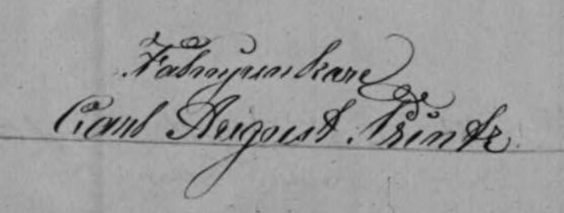 Källor: Livregementets dragoner, Roslags skvadron, Generalmönsterrullor 1868, 1871 Söderby-karl kyrkoarkiv, Husförhörslängder SE/SSA/1570/A I/9 (1866-1870) Söderby-karl kyrkoarkiv, Husförhörslängder SE/SSA/1570/A I/11a (1876-1880) |
|
| 1881 - 1886 | Fanjunkare | Lars Fredrik Grönvall |
Född i Ystad 1835. Hustru Emma Kristina Paulina. Husförhören visar att familjen hade en son Karl och en dotter Bertha. Svärmor Anna Kristina Wallin bor också i huset samt flera pigor.
(Kommentar: Gunvor berättade att det tidigare varit utbyggt ett svärmorsrum från salen på gaveln)
Avsked den 22 januari 1886 enligt Generalmönsterrullan 1886, position 93.
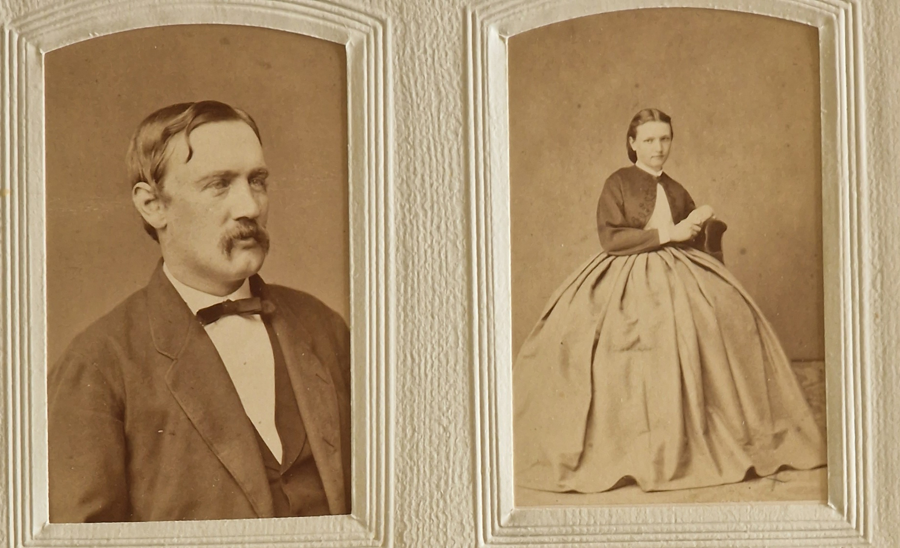 Bild på Lars och Emma Grönvall mottagen av Eric Read från Åkersberga som är barnbarnsbarnbarn till svärmodern Anna Kristina Wallin som bodde kvar på gården till 1890. Eric och syster Karin besökte oss i Oktober 2023. Källor: Livregementets dragoner, Roslags skvadron, Generalmönsterrullor 1883, 1886 Söderby-karl kyrkoarkiv, Husförhörslängder SE/SSA/1570/A I/12a (1881-1885) Söderby-karl kyrkoarkiv, Husförhörslängder SE/SSA/1570/A I/13a (1886-1895) |
{kind=link}